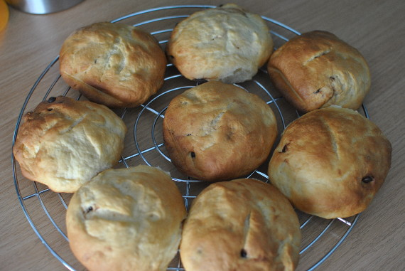

Brioche

- Zubereitung: ca. 15 Minuten
- Ruhezeit: ca. 90 Minuten
- Backen: ca. 20 Minuten
- Für 2 Stück oder ca. 12 Muffins/Brötchen
Zutaten
- 500 g Mehl Typ 550
- 1 Prise Salz
- 1 Hefewürfel
- 100 g Zucker
- 125 ml Sahne
- 150 ml lauwarme Milch
- 1 Ei
- 60 g kalte Butter
Zubereitung
- Das Mehl mit Salz und der Hälfte des Zuckers mischen. Die Hefe in die lauwarme Milch geben und mit dem restlichen Zucker und Sahne verrühren. Stehen lassen, bis sich die Hefe komplett aufgelöst hat. Die Hefemischung zu dem Mehl geben, das Ei hinzufügen
und alles kneten. Nach und nach die Butter in kleinen Stückchen hinzugeben und immer weiter kneten, bis sich der Teig zu einer Kugel formt.
- Den Teig eine Stunde gehen lassen und dann wie gewünscht formen. Erneut für 30 Minuten ruhen lassen.
- Den Backofen auf 200° Celsius (Umluft 180° Celsius) vorheizen und die Brioche für 20 Minuten backen. Aus dem Ofen nehmen und vollständig auskühlen lassen.
(Quelle: http://zuckerzicken.de/?p=1457)